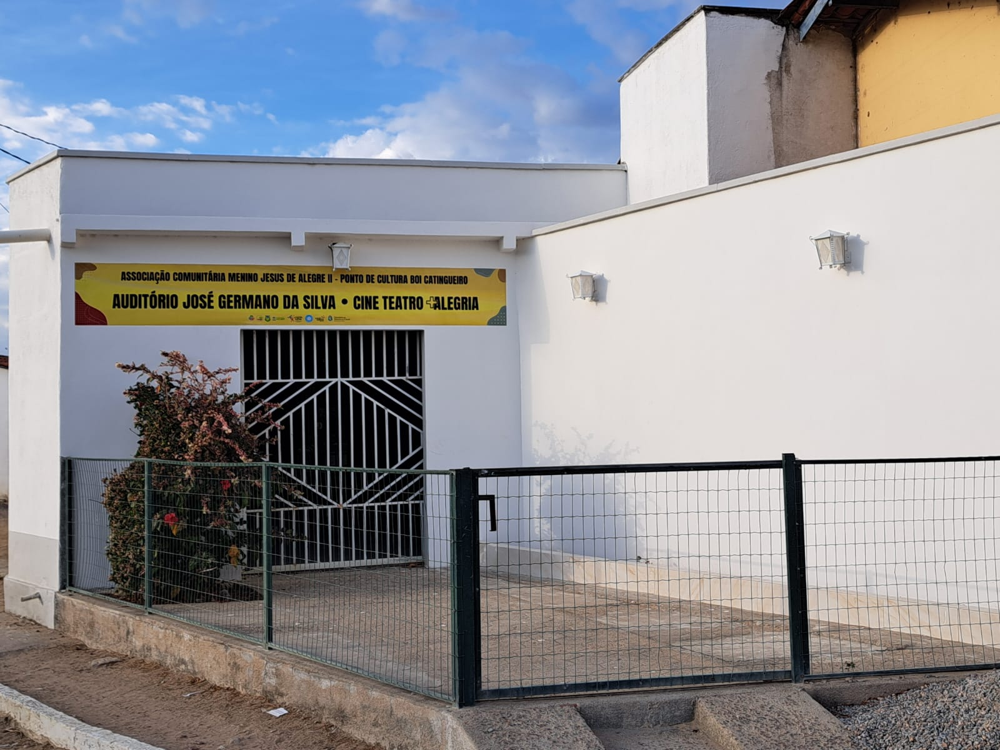
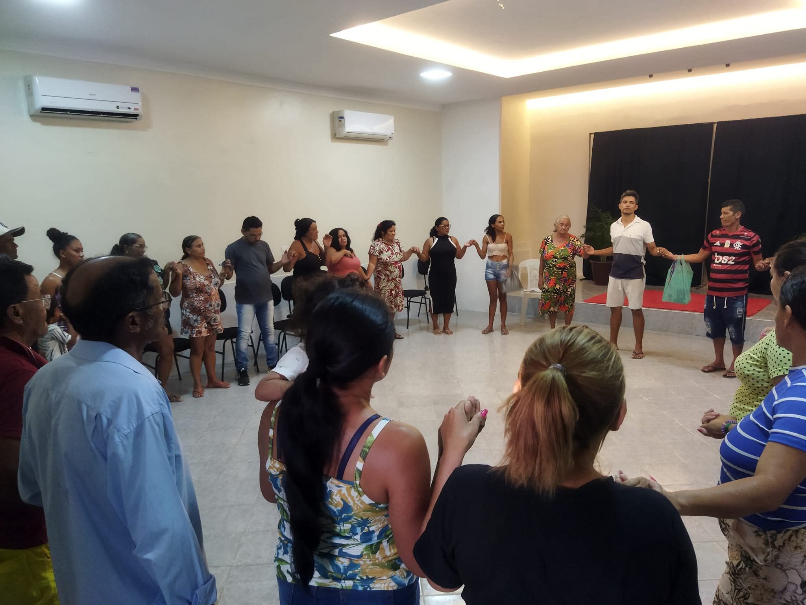

Uma História de Raízes
Do sonho de uma comunidade à referência cultural no sertão de Itatira.
A Semente em Alegre: Luta e Dignidade
A história da Associação Comunitária Menino Jesus de Alegre II se confunde com a própria luta por sobrevivência e dignidade no sertão. Muito antes de sermos um Ponto de Cultura, nascemos da necessidade urgente de organizar a comunidade para conquistar direitos básicos.
Nos primeiros anos, nossa missão era garantir que as famílias tivessem acesso ao essencial: água, luz e comunicação. Foi através da mobilização comunitária que conquistamos projetos vitais, como a instalação da rede de energia elétrica, telefones públicos e fixos, além da construção de cisternas de placas e fogões ecológicos, permitindo a convivência sustentável com o semiárido.
Essa organização social sólida culminou no reconhecimento oficial da instituição como de Utilidade Pública, através da Lei Municipal Nº 516, de 30 de Outubro de 2006. Era o primeiro grande passo de uma longa jornada.



"Quando o povo se une, a seca vira mar de oportunidades. Nossa arte nasceu da nossa resistência."
O Despertar da Identidade Cultural
Com a infraestrutura básica encaminhada, percebemos que a comunidade tinha sede de algo mais. Era preciso alimentar a alma. Em 2009, demos um salto transformador com a aprovação do Projeto Praça Cultural (Edital do BNB) e a implantação do Cine Mais Cultura (MinC), abrindo janelas para o mundo através do audiovisual.
Foi nesse solo fértil que floresceu o Grupo Boi Catingueiro. Resgatando as tradições do Reisado — como o histórico Boi dos Caretas de São Gonçalo — e inovando com as artes cênicas, a Associação passou a ser um farol de cultura.
Entre 2012 e 2013, executamos o projeto divisor de águas: "Um Olhar Para Quem Precisa Ser Olhado". Focado no resgate da cidadania e da autoestima, o projeto combateu a evasão escolar, o uso de drogas e a violência, provando que a arte é uma ferramenta poderosa de transformação social.
Todo esse esforço foi coroado com o reconhecimento como Ponto de Cultura pelo Governo Federal e Estadual (2012-2015) e, mais recentemente, a certificação oficial pela CODAC/SECULT-CE em 2020, integrando a rede Cultura Viva.

Nossos Pilares
Inclusão Social
Acolher a todos, sem distinção, promovendo a cidadania e combatendo vulnerabilidades através da arte.
Memória Viva
Preservar e repassar as tradições do reisado, pastoril e festas juninas para as novas gerações.
Sustentabilidade
Promover a convivência com o semiárido através de infraestrutura e consciência ambiental.